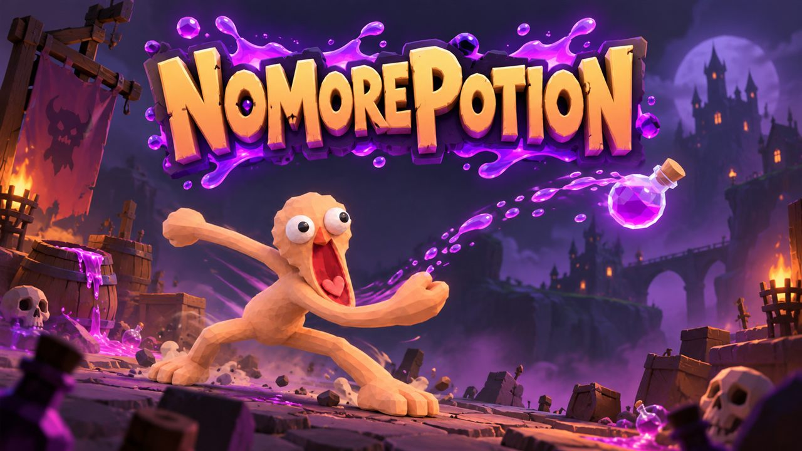
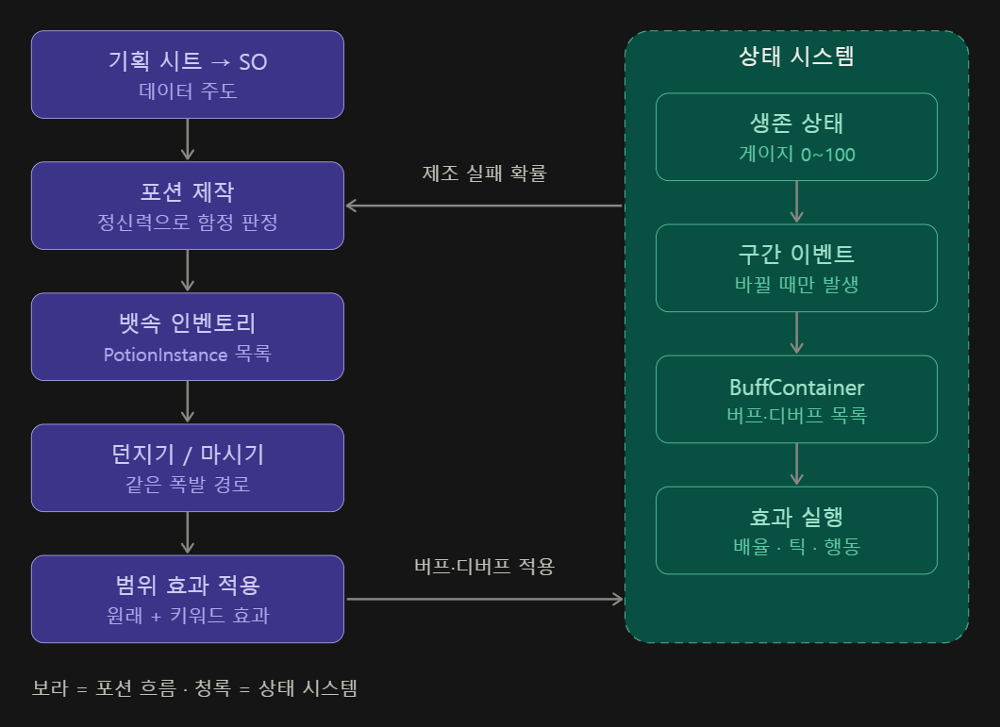
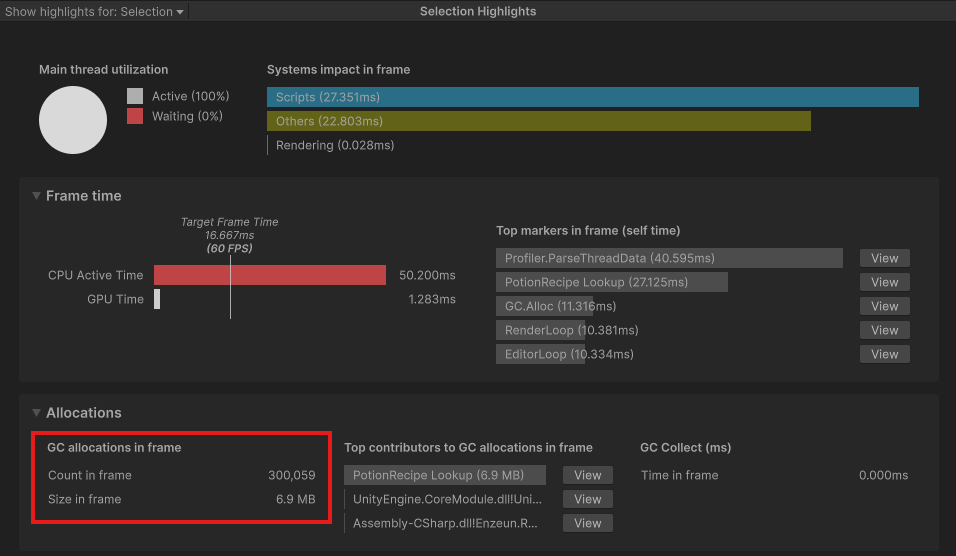
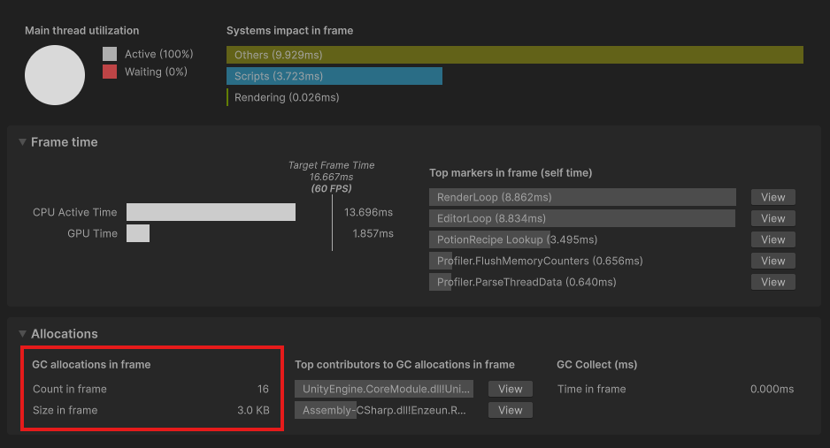
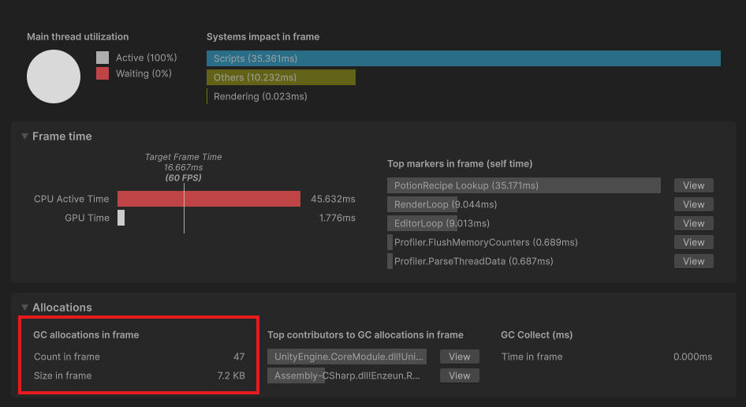

기업협약 팀 프로젝트 · CBT 제출 (2026.11.12)
NoMorePotion
포션 하나로 생존하는 멀티플레이 생존 액션. 기획 시트가 그대로 게임 데이터가 되고, 새 효과는 코드 수정 없이 데이터 조립으로 추가되는 구조를 만들었습니다.
2026.11.12 CBT 빌드를 제출했고, 개발은 계속 진행 중입니다.CBT는 PUN 오프라인 모드(내가 마스터인 방)의 싱글 플레이로 제출했습니다. 인벤토리·월드 오브젝트 동기화 코드는 같은 경로로 빌드에 포함되어 동작하지만, 실제 클라이언트 둘 이상을 띄운 검증은 아직입니다. 남은 일은 아래 '현재 상태와 다음 단계'에 있습니다.

- 기간
- 2026.11.02 ~ 진행 중 (CBT 빌드 제출 2026.11.12)
- 인원 · 역할
- 개발 4인 · 데이터 아키텍처, 기획자용 에디터 툴, 포션 조합/폭발/범위 장판, 생존 상태, 버프/디버프, 함정 포션, 인벤토리 3종, 멀티플레이 동기화(팀 인벤토리 · 시체 상자 · 월드 오브젝트 · 바닥 재료), 개인 인벤토리·상태 효과·흔들기 UI, 피격·폭발 피드백
- 기술
- Unity 6000.3 · C# · ScriptableObject · Odin Inspector · UniTask · Photon PUN 2 · Unity Profiler
- 기여 규모
- CBT 빌드 기준 커밋 76개(merge 제외, 팀 전체 302개) · 담당 영역 C# 71개 파일, 약 13,300줄(주석·공백 포함) · SO 에셋 약 180개 자동 생성
1. 이 프로젝트로 보여 드리는 것
| 강점 | 근거 | 결과 |
|---|---|---|
| 측정으로 증명한다 | 조합 조회 키 구조체의 박싱을 Profiler로 측정하고, IEquatable<T> 구현 후 다시 측정 | 10만 회 조회 기준 할당 300,059건 / 6.9MB → 할당 원인 목록에서 사라짐 |
| 기획이 직접 다루는 데이터를 만든다 | Odin 에디터 윈도우, 기획 시트(CSV) → SO 일괄 생성기, 효과 문장을 규칙 기반으로 해석 | 포션 72 · 재료 27 · 상태 효과 21 · 월드 오브젝트 43 생성, 포션 효과 276개 해석 실패 0건 |
| 확장에 닫히지 않는 구조 | 효과를 클래스가 아닌 모듈 조립([SerializeReference])으로 설계, 에디터는 인터페이스 + 제네릭으로 통합 | 새 데이터 종류 추가 시 에디터 수정 11줄, 함정 효과는 기존 폭발 경로에 인자 하나로 적용 |
| 네트워크를 모르는 규칙 코어 | 인벤토리·월드 오브젝트 규칙을 순수 C#으로 두고 PUN 연결은 얇은 껍데기로 분리 | 에디터 시뮬레이션 72개 + PUN 오프라인 Play 모드 40개 시험 통과 (동시 꺼내기 경쟁, 메시지 유실 후 복구, 늦은 입장 포함). 같은 코드가 CBT 싱글(오프라인 모드) 빌드에서 그대로 동작 |
| 공유 데이터와 런타임 상태를 분리한다 | SO는 설정만, 남은 시간·횟수·틱 타이머·함정 여부는 런타임 인스턴스에 둠 | 여러 플레이어와 몬스터가 같은 SO를 써도 값이 오염되지 않음 |
2. 구조

- ID 대역으로 데이터 종류를 구분합니다: 포션 1xxxx / 재료 2xxxx / 월드 오브젝트 3xxxx / 함정 키워드 5xxxx / 상태 효과 6xxxx
- SO는 private 필드 + 읽기 전용 프로퍼티로 두고, ID 변경은
#if UNITY_EDITOR로 제한해 런타임 변조를 막았습니다.
3. 핵심 구현
① 기획자용 데이터 툴과 시트 → SO 일괄 생성
- 문제
- 재료·포션·월드 오브젝트마다 생성 버튼과 메서드가 복붙되어 있었고, 기획 시트의 수백 줄을 손으로 옮길 수 없었습니다.
- 판단
IItemData인터페이스와 제네릭(CreateButton<T>,CreateAsset<T>)으로 통합하고, CSV를 읽어 SO를 만드는 생성기를 따로 둡니다.- 결과
- 함정 키워드 SO를 추가할 때 에디터 수정은 11줄. "불 속성 대미지 250", "수분 + 5%" 같은 효과 문장 276개를 실패 0건으로 효과 모듈로 변환했습니다. 이미 있는 에셋은 덮어쓰지 않고, 생성 후 YAML을 직접 열어 값을 확인했습니다.
② 순서 무관 포션 조합 (O(1) 조회)
- 값 타입 구조체
PotionRecipeSet을 Dictionary 키로 쓰고,Math.Min/Max로 재료 ID를 정렬해 A+B와 B+A를 같은 키로 만듭니다. - 같은 포션 2개를 합치면 다음 등급(중 = 소+소, 대 = 중+중)이 되고, 대+대는 조합 타입 검사로 자연스럽게 거절됩니다.
- 성능 개선 과정은 4. 성능 측정에 정리했습니다.
③ 생존 상태 (체온 · 정신력 · 수분 · 포만감)
- 상태마다 변화 규칙이 달라 독립 매니저로 분리했습니다. 값은 0~100 정수이고, 변경은
Increase / Decrease / Reset로만 가능하며 세 경로 모두 구간 판정을 거칩니다. - 구간을 enum으로 표현하고
Normal을 0번에 두어, 초기값이 곧 정상 상태가 되게 했습니다. event Action<Prev, Next>는 구간이 실제로 바뀔 때만 발생합니다. 조건이 유지되는 동안 반복 호출이 없고, 사망 이벤트는 플래그로 한 번만 발생합니다.
④ 버프/디버프 — 클래스를 늘리지 않는 효과 시스템
- 문제
- 디버프마다 클래스를 만들면 기획이 효과를 추가할 때마다 프로그래머가 필요합니다.
- 판단
- 효과 =
StatusEffectData(SO) + 조립식 모듈(수치 보정, 체력 증감, 주기 행동, 제조 실패 확률). 모듈은[SerializeReference]리스트와 Odin 타입 드롭다운으로 기획이 직접 조립합니다. - 결과
- 런타임은
BuffContainer가 맡습니다. 중첩 정책(Unique/RefreshDuration/StrongestWins), 곱연산 배율 캐싱, 건 주체(source) 기록으로 같은 디버프가 여러 출처에서 걸려도 서로 지우지 않습니다.
- 생존 상태 → 효과 자동 연결: 구간별 효과 표를 SO로 분리하고, 구간 전환 시 새 목록에 없는 효과만 제거하고 아직 없는 효과만 적용합니다. 유지되는 효과는 다시 걸지 않아 주기 타이머가 초기화되지 않습니다.
- 주기 행동(추위 이동 정지, 허기 아이템 소모 등): 컨테이너는 발동 시점만 관리하고 이벤트로 알리며, 실제 행동은 받는 쪽이 처리합니다.
- 틱이 필요한 효과가 있을 때만 컨테이너의
Update를 켜서, 몬스터가 많아도 유휴 컨테이너의 비용이 없습니다.
⑤ 포션 폭발과 함정 포션
- 범위 탐색(
PotionExplosion) / 대상 1개에 적용(PotionEffectApplier) / 던져진 오브젝트(Potion)로 책임을 나눴습니다.OverlapSphereNonAlloc과 재사용 버퍼로 할당 없이 탐색합니다. - 마시기 = 내 위치에서 폭발이므로 자신이 범위에 포함되어, 마시기 전용 로직이 필요 없습니다.
- 함정 포션: 제작 순간 정신력으로 실패를 판정해 원래 포션에 함정 키워드(13종)가 붙습니다. 같은 포션도 함정 여부가 다르므로 SO가 아닌
PotionInstance로 한 개씩 보관하고, 폭발 내부 함수에 키워드 인자 하나를 추가해 마시기·던지기 모두 같은 경로로 적용했습니다. - 실패 판정은
Random.Range(0, 100) < chance로, 0%면 항상 성공하고 100%면 항상 실패하도록 경계값을 맞췄습니다.
⑥ 인벤토리와 멀티플레이 동기화 (PUN 2)
요구: 재료·포션은 팀이 공유하고, 개인 인벤토리(10칸)는 죽으면 전부 떨어뜨려 시체 상자가 된다. 월드 오브젝트의 남은 횟수는 모두가 같게 보여야 한다.
- 클라이언트 요청요청 번호 포함
- 마스터 검증상태는 바꾸지 않고 확정값 생성
- 전원 적용마스터도 같은 경로로 적용
- 사본 버전 +1어긋나면 전체 목록 재요청
- 인벤토리 3종: 팀 재료(ID → 개수) · 팀 포션(인스턴스 보관) · 개인 10칸(칸마다 재료 또는 포션). 처음에는 앞의 둘을 조합할 계획이었지만, "아무 칸에나 무엇이든" 담는 UI와 맞지 않아 칸 배열 구조로 바꿨습니다.
- 꺼내기는 위치가 아니라 ID로 요청해, 동시에 같은 포션을 집어도 먼저 도착한 한 명만 성공합니다. 랜덤과 ID 발급은 마스터만 합니다.
- 늦게 입장한 사람은 입장 이벤트가 아니라 씬 로딩이 끝난 뒤 "준비됨"을 보내 전체 목록을 받습니다.
- 아이템은 byte 배열로 묶어 전송합니다(포션 한 개 = 8 byte). 길이가 맞지 않거나 모르는 ID면 예외 없이 실패하고, 값 범위 초과는
checked로 즉시 드러냅니다. - 시체 상자: 개인 인벤토리를 먼저 비운 뒤(복제 방지) 같은 요청 흐름으로 공유 상자를 만드는 로직을 구현했습니다. 사망 흐름과의 연결은 아직 남아 있습니다.
- 월드 오브젝트: 남은 횟수를 같은 구조로 동기화하고, 소진 시 드롭을 마스터가 한 번만 굴려 모두가 같은 재료와 개수를 받습니다.
- 검증 방법: 규칙 코어가 네트워크를 모르기 때문에 에디터에서 마스터 1 + 클라이언트 2를 흉내 내어 시험하고, PUN 오프라인 모드로 실제 RPC 경로까지 확인했습니다. PUN 소스를 읽어
RpcTarget.All이 로컬에서도 실행된다는 점을 확인하고 오프라인 시험의 한계를 파악했습니다.
⑦ CBT 빌드에 더한 것 (11.09 ~ 11.12)
CBT는 오프라인 모드 싱글 플레이로 제출했습니다. 규칙 코어가 네트워크를 모르고 마스터도 같은 경로로 적용하도록 만들어 둔 덕분에, 멀티플레이용 동기화 코드를 바꾸지 않고 싱글 빌드에 그대로 쓸 수 있었습니다.
- 바닥 재료 주머니: 데이터(
GroundDrop)와 화면 표시(GroundPouch)를 나눴습니다. 위치는 마스터가 정해 모두에게 같은 값으로 알리고, 늦게 들어와 전체 목록을 받으면 모두 지우고 현재 상태대로 다시 만듭니다. 월드 오브젝트가 소진되며 떨어진 재료를 바로 주울 수 있게 연결했습니다. - 개인 인벤토리 UI 연결: 전체 목록을 받으면 인벤토리 객체가 통째로 바뀌어 UI가 연결을 잃는 문제를,
LocalPersonalInventoryView가 다시 연결하고 알려 주도록 해결했습니다. UI는 그리기만 하고, 조작은 동기화 매니저의 요청 함수로만 보냅니다. - 상태 효과 아이콘 바: 추가·제거는
BuffContainer이벤트로 바로 반영하고, 남은 시간은 갱신 이벤트가 없어 1초에 한 번만 읽습니다. 같은 효과는 한 칸에 묶어 개수를 보여 주고, 값이 그대로면 글자를 다시 쓰지 않습니다. - 포션 흔들기 UI: 플레이어는 흔들기 시작·종료만 알리고, 함정 확인(
Inspect)과 표시는 UI가 맡습니다. DOTween이 현재 알파에서 이어 시작해, 나타나는 도중에 R을 떼도 화면이 튀지 않습니다. - 피격·폭발 피드백 (Feel): 허브는 "얼마나 세게 재생할지"만 정합니다(피격은 받은 피해 비율, 폭발은 크기 × 거리 감쇠). 짧은 시간에 겹치면 더 센 것만 재생해 후처리가 과하게 쌓이지 않습니다. 월드 오브젝트 연출은 마스터가 확정한 횟수 이벤트에 반응하므로 모두에게 같은 연출이 보입니다.
- 범위 장판 포션: 처음 폭발 때는 모든 효과를 적용하고, 이후 간격마다는 체력 증감만 반복해 상태 효과와 생존 상태 증감이 틱마다 중복되지 않게 했습니다.
- 테스트 지급: CBT용 기본 지급도 마스터 검증을 거치는 일반 요청 흐름을 그대로 타고, 출시 빌드에서는 스위치 하나로 거부되도록 했습니다.
4. 성능 측정: 조합 키의 박싱 제거
- 발견
- 구조체 키에
IEquatable<T>가 없어 Dictionary가 기본 비교를 쓰고, 조회 1회당 약 3건의 힙 할당이 발생했습니다. - 측정
- 에디터 전용
[Button]테스트로 레시피 조회를 N회 반복하고 Profiler로 확인했습니다 (Unity 6000.3 에디터). - 결과
- 10만 회 기준 300,059건 / 6.9MB →
PotionRecipe Lookup이 할당 원인 목록에서 사라짐 (프레임 전체 16건 / 3.0KB)



코드 — 수정 전 / 수정 후
// 수정 전: 비교 방법을 제공하지 않아 Dictionary 가 기본 비교(박싱 가능)를 사용
public struct PotionRecipeSet
{
public int firstIngredientID;
public int secondIngredientID;
}
// 수정 후
public struct PotionRecipeSet : IEquatable<PotionRecipeSet>
{
public int firstIngredientID;
public int secondIngredientID;
public bool Equals(PotionRecipeSet other)
=> firstIngredientID == other.firstIngredientID
&& secondIngredientID == other.secondIngredientID;
public override bool Equals(object obj) => obj is PotionRecipeSet other && Equals(other);
public override int GetHashCode() => HashCode.Combine(firstIngredientID, secondIngredientID);
}5. 트러블슈팅
SO 데이터가 에디터 재시작 후 기본값으로 돌아감
- 현상
- Odin 툴로 입력한 값이 다음 날 초기값으로 되돌아갔습니다.
- 원인
[ShowInInspector]만 있고[SerializeField]가 없어, 표시·편집은 되지만 직렬화되지 않았습니다. 에디터가 켜져 있는 동안은 메모리 값이 남아 있어 발견이 늦었습니다.- 교훈
- "화면에 보이는 것"과 "저장되는 것"은 다릅니다. 이후 데이터 작업은
.assetYAML 확인을 검증 단계에 넣었습니다.
곱연산 중첩 수치가 기획 의도와 다름
- 현상
- 시야 −20%와 −90%가 겹치면 90%가 아니라 약 92%가 감소했습니다 (0.8 × 0.1 = 0.08).
- 해결
- 정수 퍼센트로 정확한 값(−87.5%)을 표현할 수 없어, 합이 가장 가까운 −88%로 기획과 조정했습니다.
- 교훈
- 곱연산은 "각 효과의 수치"와 "겹쳤을 때의 합"이 다르므로, 겹치는 구간은 합을 기준으로 검증합니다.
시험 중 발견한 인벤토리·네트워크 결함
- 시체 상자 요청에 null 칸을 넘기면 직렬화 단계에서 예외 → 빈 목록으로 보내 마스터가 "잘못된 요청"으로 거부하게 수정
- ID가 0인 포션이 시체 상자로 가면 풀 수 없어 내용이 사라질 위험 → 넣을 때 ID가 없으면 부여하도록 수정
- 교훈: 네트워크 문제처럼 보여도 대부분 규칙 코어에서 재현되므로, 전송과 규칙을 분리해 두면 에디터에서 먼저 잡을 수 있습니다.
6. 현재 상태와 다음 단계
2026.11.12 CBT 빌드를 제출했습니다. CBT는 PUN 오프라인 모드 싱글 플레이이고, 지금까지의 검증은 에디터 테스트 버튼, Profiler, 에셋 YAML 확인, 마스터 1 + 클라이언트 2 시뮬레이션, PUN 오프라인 Play 모드 시험, CBT 싱글 빌드 플레이입니다. 실제 클라이언트 둘 이상을 띄운 네트워크 검증은 아직 하지 않았습니다.
- CBT 피드백 반영
- 실제 다중 클라이언트 검증: 빌드 둘로 팀 인벤토리·바닥 재료·월드 오브젝트 동기화 확인
- 죽을 때 시체 상자 생성 연결 (상자 동기화 로직은 있으나 사망 흐름에 아직 연결되지 않음)
- 포션 폭발이 네트워크로 전파될 때 월드 오브젝트 대미지 중복 방지
- 마스터 교체 대응: 포션 ID는 지금 마스터의 메모리에서만 발급해서, 마스터가 나가면 방을 닫는 것을 전제로 하고 있음
- 출시 전 정리: 테스트 지급 끄기, 에디터 데이터 검증 버튼